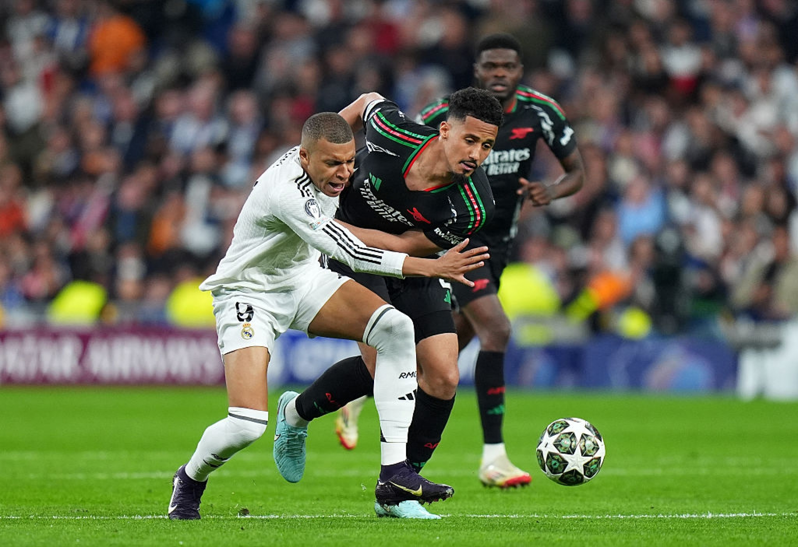

Футболът е най-популярният спорт в света и се играе между два отбора с по 11 играчи, чиято основна цел е да вкарат топката във вратата на противника, за да отбележат гол, като само вратарят има право да използва ръцете си. Един мач се състои от две полувремена по 45 минути и печели отборът с повече голове. Съществуват различни нарушения, които се наказват с фалове, жълти и червени картони. Най-важните турнири във футбола са Световно първенство по футбол, Шампионска лига на УЕФА и Европейско първенство по футбол. Сред най-известните футболисти са Лионел Меси, Кристиано Роналдо и Пеле, а за България най-големият успех е четвъртото място на Световното първенство по футбол 1994, когато Христо Стоичков е сред звездите на отбора.
